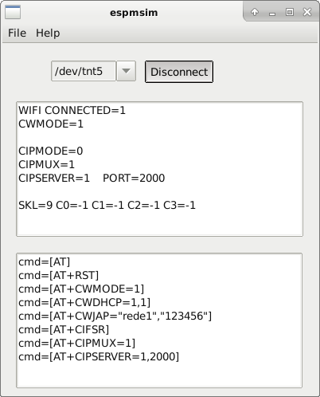

8.3 Esp8266 Modem Simulator
To use this tool with PICSimLab you first need to configure a virtual serial port as described in Chapter: Serial Communication. It is possible to use this tool with a real serial port connected to a real device.
ESP8266 Modem Simulator

8.3.1 Supported Commands